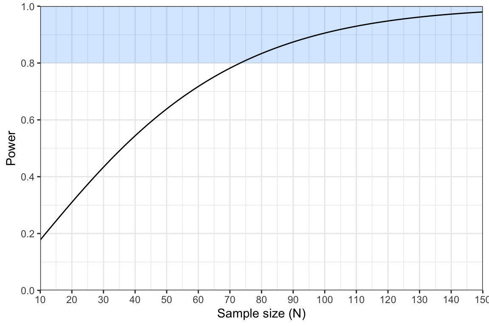
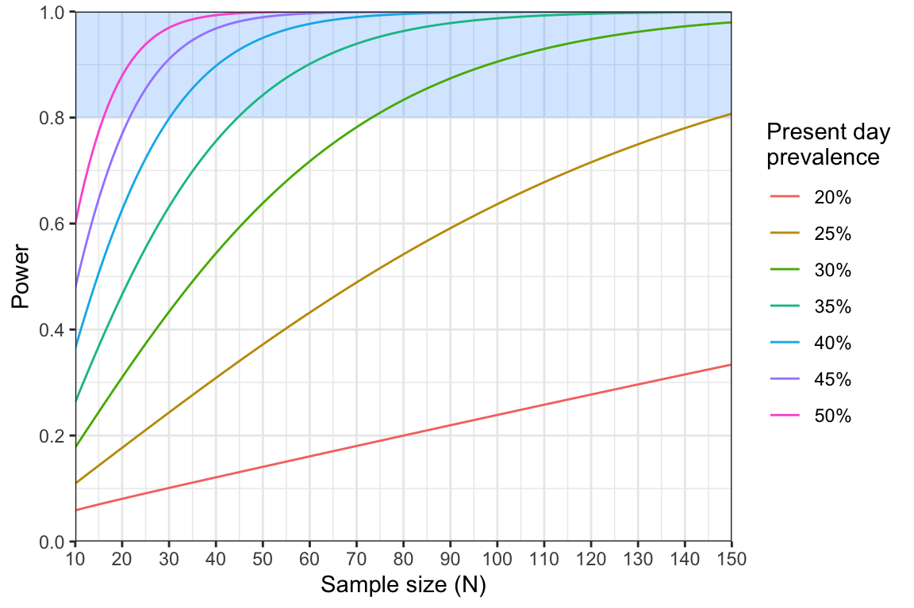

Introduction
Welcome to Activity 3: Hypothesis Testing and Power
In this activity, we introduce the concept of statistical power and demonstrate its connection to null hypothesis testing. In many studies within malaria molecular surveillance, we aim to test specific hypotheses. For instance: Has the prevalence of drug resistance mutations increased over the past five years? Are certain genetic variants linked to gender, or occupation? Does treatment efficacy vary based on genetic markers? Each of these questions can be framed as a null hypothesis test. This leads us to a crucial question: given that a real effect exists, how likely is it that our study design will detect it? Statistical power is the mathematical way to calculate how likely we are to detect this real effect. We’ll explore these concepts using two examples: comparing drug resistance prevalence between two time points and detecting rare genetic variants
Learning Outcomes
By the end of this tutorial, you will be able to:
- Define key terms related to null hypothesis testing.
- Use a test statistic to decide whether or not to reject a null hypothesis.
- Perform power analysis using two different statistical tests.
- Interpret power curves.
- Use minimum sample size tables.
Disclaimer: The scenarios in this document are entirely fictitious. While real place names are used, the data itself is artificial and designed for teaching purposes only. It does not necessarily represent the real epidemiological situation in these locations.
Quiz on hypothesis testing and power
Well done on completing this quiz! We will now put some of these ideas into practice.
Testing for changes in drug resistance prevalence over time
You are a local health minister working in the Gombe region of Nigeria. You are concerned that the prevalence of antimalarial resistance may be increasing in Gombe city, the capital of Gombe state. A study conducted three years ago found that the prevalence of pfmdr1 N86Y mutations was 15%. You plan to conduct a new study to establish if there has been a significant change in the prevalence of N86Y mutations over this time.
We will take the previous estimate of 15% prevalence three years ago to be exact. Because we are comparing a sample against a known value, the appropriate statistical test is the one-sample z-test for proportions.
We will denote the prevalence three years ago by \(p_0 = 0.15\). For our power analysis, we need to assume a known prevalence in the present day, which we will denote \(p_1\). We will be pessimistic and assume that the prevalence has doubled over the three year period, meaning \(p_1=0.30\). Our initial plan is to use a sample size of \(N=150\).
Given these values, we can calculate the expected value for our test statistic using the following formula: \[ y = \frac{|p_1 - p_0|}{\sqrt{\frac{p_1(1-p_1)}{N}}} \] The vertical lines around \(|p_1 - p_0|\) mean we should take the absolute value of the difference. This ensures that \(y\) is always positive.
Complete the following R code to calculate the value of \(y\):
# input parameters
p0 <-
p1 <-
N <-
# calculate absolute value of difference in prevalence
p_diff <- abs(p1 - p0)
# calculate the standard error
SE <- sqrt(p1*(1 - p1) / N)
# calculate the expected value of the statistic
y <-
print(y)# input parameters
p0 <- 0.15
p1 <- 0.3
N <- 150
# calculate absolute value of difference in prevalence
p_diff <- abs(p1 - p0)
# calculate the standard error
SE <- sqrt(p1*(1 - p1) / N)
# calculate the expected value of the statistic
y <- p_diff / SE
print(y)Click to see the answer
You should find that \(y = 4.01\).
This means that on average we should expect our test statistic to equal \(4.01\) if the alternative hypothesis is true. The actual value that we observe would be expected to vary around this value.
We can use \(y\) to tell us our power. The formula for power under the z-test is:
\[ \text{Power} = 1 - \phi(z_{1-\alpha/2} - y) \]
In this formula, \(\phi(x)\) refers
to the area under the curve of a standard normal distribution up to the
point \(x\). There is no simple way of
calculating this value, but we can obtain it easily in R using the
pnorm() function. As in previous activities, the value
\(z_{1 - \alpha/2}\) refers to the
critical value of the normal distribution at a significance level \(\alpha\) (two-tailed), which is
approximately equal to 1.96.
Complete the following R code to calculate the power under the planned study design:
# calculate power using the known value of y
z <- 1.96
power <- # hint, you will need to use the pnorm() function here
print(power)# calculate power using the known value of y
z <- 1.96
power <- 1 - pnorm(z - y)
print(power)Click to see the answer
You should find that \(\text{Power} = 0.98\).
Using power curves
We have calculated that our current study design has 98% power. We normally aim for at least 80% power, meaning this study is adequately powered. In fact, we could argue that it is over-powered, meaning we could get away with using fewer samples and still have a good chance of detecting a real effect.
We can use power curves to explore how power changes as a function of sample size. In the plot below, the region with at least 80% power is shaded in blue.

The power analysis indicates that we may not need to sequence 150 samples after all. However, it did make the rather pessimistic assumption that prevalence has doubled from 15% to 30% over the three year period. It would be useful to repeat this analysis making different assumptions about the prevalence. One way to do this is via a series of power curves:

Even a slight change in our assumption about the prevalence of N86Y mutations has a large effect on power. If we assumed present-day prevalence was 25% rather than 30% then we would need twice as many samples to achieve 80% power. This analysis was useful for exploring the exact relationship between sample size and power. However, it can be fiddly to read values off the power curve to find the exact point at which it crosses the 80% threshold. This is where sample size formulae and sample size tables come in handy.
Using sample size tables
Recall that power under the one-sample z-test for proportions was given by \[ \text{Power} = 1 - \phi\left(z_{1-\alpha/2} - \frac{|p_1 - p_0|}{\sqrt{\frac{p_1(1-p_1)}{N}}} \right) \] Recall that in an earlier module we rearranged the formula for the Wald confidence interval to arrive at a new formula in terms of the sample size \(N\). Here, we want to do exactly the same thing, just with a more complicated formula! We won’t walk through the steps of this derivation, but take my word for it that this can be rearranged to produce: \[ N = (z_{1 - \alpha/2} + z_{1 - \beta})^2\frac{p_1(1 - p_1)}{(p_1 - p_0)^2} \] The only unfamiliar term here is \(z_{1 - \beta}\), which is the area under the curve of the standard normal distribution up to the value \(1 - \beta\). The parameter \(\beta\) is one minus our power (typically \(\beta = 0.2\) because minimum power is usually 0.8).
The following R code implements this sample size formula. Have a play
around with this code. Try changing the value of p1 and see
what happens to the minimum sample size. Do you obtain the value \(N=74\) when \(p_1=0.3\), like we found from the power
curve? Remember that you should always round sample sizes up if
they are non-integers. What happens to the sample size as
p1 gets closer to 15%?
# define our assumed values
p0 <- 0.15
p1 <- 0.30
# define the two z parameters
z_alpha <- 1.96
z_beta <- qnorm(0.8)
# calculate the minimum sample size
(z_alpha + z_beta)^2 * p1*(1 - p1) / (p1 - p0)^2One of the nice things about sample size formulae is that we can use them to produce tables of minimum sample sizes. Table 1 shows the minimum sample size required to achieve 80% power under different assumptions about the prevalence of N86Y mutations:
| Assumed present-day prevalence of N86Y mutation | Sample size |
|---|---|
| 20% | 503 |
| 25% | 148 |
| 30% | 74 |
| 35% | 45 |
| 40% | 31 |
| 45% | 22 |
| 50% | 17 |
|
Table 1: minimum sample sizes under various assumptions about present-day prevalence |
This allows us to scan across values and work out what is reasonable, and also what is achievable.
Reflection:
What sample size would you opt for in this case? What factors could help you decide on a reasonable assumption for the present day prevalence of N86Y mutations? What factors could help constrain which sample sizes are feasible?
Detecting rare variants
Building on the success of your N86Y study in Gombe city, you have been invited to conduct a new investigation focused on identifying pfk13 mutations in the nearby town of Pindiga. This study will target WHO validated mutations that are known to be associated with partial resistance to artemisinin. Instead of estimating the prevalence of these mutations, your goal is simply to determine whether any of these mutations are present in the population.
Your will test individuals who present with malaria symptoms at a local health facility. For those who test positive for malaria, dried blood spots will be collected and subsequently sent for sequencing. However, due to limited resources, you are only able to sequence 100 samples.
The key question, then, is: with a sample size of only 100, is it worthwhile to pursue this study?
Framing the problem as a hypothesis test
This type of detection study can be framed as a hypothesis test. The null hypothesis is that there are no WHO-validated mutations present in the population. In other words, the prevalence of these mutations is zero. Even a single observation of a mutant would disprove this null hypothesis. Therefore, unlike most statistical tests, there is no test statistic to calculate. Instead, we simply reject the null hypothesis if we see a single WHO-validated mutant.
It is straightforward to calculate power under this test. We start by assuming a known prevalence, \(p\), for the validated mutations. \(p\) is zero under the null hypothesis, and \(p\) must be greater than 0 under the alternative hypothesis. We will use \(N\) to denote the sample size. We can derive the power by following these steps:
Step 1: Chance of a single negative result:
The probability that a single sample is negative (i.e. does not carry a validated pfk13 mutation) is given by: \[ \text{Pr}(\text{Negative}) = 1 - p \] Step 2: Chance of two negative results:
The probability of two negative samples is the probability of one negative sample multiplied by the probability of another negative sample: \[ \begin{align} \text{Pr}(\text{Two negatives}) &= (1 - p)(1 - p) \\ &= (1 - p)^2 \end{align} \]
Step 3: Chance of \(N\) negative results:
The probability that all \(N\) samples are negative is the probability of one negative sample raised to the power \(N\): \[ \text{Pr}(N \text{ negatives}) = (1 - p)^N \] This is like saying what is the probability we observe a negative outcome \(N\) times. It assumes that samples are drawn independently from a much larger population.
Step 4: Chance of at least one positive result:
The chance of seeing at least one positive sample is equal to one minus the probability of seeing no positive samples. If we see a positive sample then we reject the null hypothesis. Hence, this is also our power:
\[ \text{Power} = 1 - (1 - p)^N \] This very simple expression can be used to guide our study design.
Complete the following R code to implement this formula. What is our power if we assume a prevalence of 5%?
# define parameters
p <-
N <-
# calculate power
power <-
print(power)# define parameters
p <- 0.05
N <- 100
# calculate power
power <- 1 - (1 - p)^N
print(power)Click to see the answer
You should find that \(\text{Power} = 0.994\) if we assume a prevalence of \(p = 0.05\).
Based on this result, we are over-powered to detect pfk13 mutants, meaning we can reduce the sample size. So, how many samples are needed? Rearranging our power formula to be in terms of \(N\) we obtain: \[ N = \frac{\text{log}(1 - \text{Power})}{\text{log}(1 - p)} \]
Complete the following R code to implement this sample size formula. What minimum sample size is needed if we assume a prevalence of 5% and we are aiming for 80% power?
# define prevalence
p <-
# calculate minimum sample size
N <-
print(N)# define prevalence
p <- 0.05
# calculate minimum sample size
N <- log(1 - 0.8) / log(1 - p)
print(N)Click to see the answer
You should find that \(N = 31.38\), which would be rounded up to \(N = 32\).
This is a very promising result - we can definitely run a well-powered study within our resource constraints. However, we did make the fairly pessimistic assumption that validated pfk13 mutants are already at 5% prevalence in the population. In reality, we may want to catch them before they reach 5% in order to take pre-emptive measures. Again, we can consult a sample size table (Table 2):
| Assumed prevalence of pfk13 mutations | Sample size |
|---|---|
| 0.1% | 1609 |
| 0.5% | 322 |
| 1% | 161 |
| 2% | 80 |
| 3% | 53 |
| 4% | 40 |
| 5% | 32 |
|
Table 2: minimum sample sizes under various assumptions about pfk13 mutation prevalence |
Reflection:
Based on the values in Table 2, do you think it is worthwhile to conduct this study? If you ran a study that was powered down to 2% prevalence (80 samples) and did not find any pfk13 mutants, would you be reassured by this result?